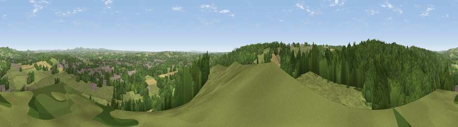

Stagborough Hill
#9614 in England · top 14% of its area beats it · near Stourport-on-SevernWhere it is
The exact computed spot (SO 78885 72140). Click the marker for map links.
The view, rendered

A 360° render of this exact spot computed from the terrain model, tree cover and land cover — summer colours, afternoon light, calibrated against photographs of famous viewpoints. Real trees, hedges and buildings will differ in detail.
The panorama
Grey silhouette: terrain skyline in each direction (720 bearings, Earth curvature and refraction included). Dashed green: skyline with trees (+15 m) and buildings (+8 m) as obstacles. Blue strip: how far the ground is visible on each bearing.
Where the view opens
Wedge length = distance to the farthest visible ground on that bearing (vegetation-aware). Rings at 10, 25 and 50 km.
What fills the view
45% woodland · 41% grassland · 8% cropland · 5% built-up · 1% water
Angular shares of the visible panorama (visual magnitude), not map area. Landscape diversity 0.49 (0–1 Shannon).
Key numbers
More beautiful places nearby
The staircase of upgrades: each row has a higher view potential than everything closer. Driving times are estimates from straight-line distance, calibrated against real road routing — check an actual route before setting out.
| Place | Direction | Drive | Score |
|---|---|---|---|
| Viewpoint near Ferndale | N · 6 km | ~12 min | 71.7 |
| Viewpoint near Abberley | SSW · 6 km | ~12 min | 77.5 |
| Abberley Hill | SW · 6 km | ~13 min | 80.4 |
| Woodbury Hill | SSW · 9 km | ~17 min | 81.6 |
| Viewpoint near Great Witley | SSW · 9 km | ~17 min | 83.4 |
| Titterstone Clee | WNW · 20 km | ~35 min | 83.8 |
| North Hill | S · 26 km | ~42 min | 86.8 |
| Worcestershire Beacon | S · 27 km | ~43 min | 87.1 |
52.34692, -2.31139 · source: osm peak · position refined by local search. Computed location — check access rights before visiting.